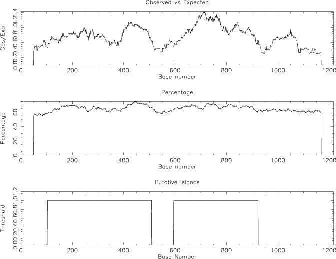

|
|
cpgplot |
Please help by correcting and extending the Wiki pages.
cpgplot identifies CpG islands in one or more nucleotide sequences. The ratio of observered to expected number of GC dinucleotides patterns is calculated over a window (sequence region) which is moved along the sequence. The calculated ratios are plotted graphically, together with the regions which match this program's definition of a "CpG island" (a CG dinucleotide rich area). A report file is written giving the input sequence name, CpG island parameters and data on any CpG islands that are found.
The ratio of observered to expected number of GC dinucleotides patterns is calculated over a window of user-specified size (-window parameter). The window is slid along the sequence and the ratio recalculated until the end of the sequence is reached.
By default, cpgplot defines a CpG island as a region where, over an average of 10 windows and not less than 200 bases, the calculated (%G + %C) content is over 50% and the calculated Observed/Expected ratio is over 0.6. These conditions can be modified by setting the values of the appropriate parameters.
The Observed number of CpG patterns in a window is simply the number of times a 'C' is found followed immediately by a 'G'.
The Expected number of CpG patterns is calculated for each window as the number of CpG dinucleotides you would expect to see in that window based on the frequency of C's and G's in that window. Thus, the Expected frequency of CpG's in a window is calculated as the number of 'C's in the window multiplied by the number of 'G's in the window, divided by the window length.
Expected = (number of C's * number of G's) / window length
% cpgplot tembl:u68037 -graph cps Identify and plot CpG islands in nucleotide sequence(s) Window size [100]: Minimum length of an island [200]: Minimum observed/expected [0.6]: Minimum percentage [50.]: Output file [u68037.cpgplot]: Features output [u68037.gff]: Created cpgplot.ps |
Go to the input files for this example
Go to the output files for this example
Identify and plot CpG islands in nucleotide sequence(s)
Version: EMBOSS:6.5.6.0
Standard (Mandatory) qualifiers (* if not always prompted):
[-sequence] seqall Nucleotide sequence(s) filename and optional
format, or reference (input USA)
-window integer [100] The percentage CG content and the
Observed frequency of CG is calculated
within a window whose size is set by this
parameter. The window is moved down the
sequence and these statistics are calculated
at each position that the window is moved
to. (Integer 1 or more)
-minlen integer [200] This sets the minimum length that a
CpG island has to be before it is reported.
(Integer 1 or more)
-minoe float [0.6] This sets the minimum average observed
to expected ratio of C plus G to CpG in a
set of 10 windows that are required before a
CpG island is reported. (Number from 0.000
to 10.000)
-minpc float [50.] This sets the minimum average
percentage of G plus C a set of 10 windows
that are required before a CpG island is
reported. (Number from 0.000 to 100.000)
[-outfile] outfile [*.cpgplot] This sets the name of the file
holding the report of the input sequence
name, CpG island parameters and the output
details of any CpG islands that are found.
* -graph xygraph [$EMBOSS_GRAPHICS value, or x11] Graph type
(ps, hpgl, hp7470, hp7580, meta, cps, x11,
tek, tekt, none, data, xterm, png, gif, pdf,
svg)
[-outfeat] featout [unknown.gff] File for output features
Additional (Optional) qualifiers: (none)
Advanced (Unprompted) qualifiers:
-[no]plot toggle [Y] Plot CpG island score
-[no]obsexp boolean [Y] If this is set to true then the graph of
the observed to expected ratio of C plus G
to CpG within a window is displayed.
-[no]cg boolean [Y] If this is set to true then the graph of
the regions which have been determined to
be CpG islands is displayed.
-[no]pc boolean [Y] If this is set to true then the graph of
the percentage C plus G within a window is
displayed.
Associated qualifiers:
"-sequence" associated qualifiers
-sbegin1 integer Start of each sequence to be used
-send1 integer End of each sequence to be used
-sreverse1 boolean Reverse (if DNA)
-sask1 boolean Ask for begin/end/reverse
-snucleotide1 boolean Sequence is nucleotide
-sprotein1 boolean Sequence is protein
-slower1 boolean Make lower case
-supper1 boolean Make upper case
-scircular1 boolean Sequence is circular
-sformat1 string Input sequence format
-iquery1 string Input query fields or ID list
-ioffset1 integer Input start position offset
-sdbname1 string Database name
-sid1 string Entryname
-ufo1 string UFO features
-fformat1 string Features format
-fopenfile1 string Features file name
"-outfile" associated qualifiers
-odirectory2 string Output directory
"-graph" associated qualifiers
-gprompt boolean Graph prompting
-gdesc string Graph description
-gtitle string Graph title
-gsubtitle string Graph subtitle
-gxtitle string Graph x axis title
-gytitle string Graph y axis title
-goutfile string Output file for non interactive displays
-gdirectory string Output directory
"-outfeat" associated qualifiers
-offormat3 string Output feature format
-ofopenfile3 string Features file name
-ofextension3 string File name extension
-ofdirectory3 string Output directory
-ofname3 string Base file name
-ofsingle3 boolean Separate file for each entry
General qualifiers:
-auto boolean Turn off prompts
-stdout boolean Write first file to standard output
-filter boolean Read first file from standard input, write
first file to standard output
-options boolean Prompt for standard and additional values
-debug boolean Write debug output to program.dbg
-verbose boolean Report some/full command line options
-help boolean Report command line options and exit. More
information on associated and general
qualifiers can be found with -help -verbose
-warning boolean Report warnings
-error boolean Report errors
-fatal boolean Report fatal errors
-die boolean Report dying program messages
-version boolean Report version number and exit
|
| Qualifier | Type | Description | Allowed values | Default |
|---|---|---|---|---|
| Standard (Mandatory) qualifiers | ||||
| [-sequence] (Parameter 1) |
seqall | Nucleotide sequence(s) filename and optional format, or reference (input USA) | Readable sequence(s) | Required |
| -window | integer | The percentage CG content and the Observed frequency of CG is calculated within a window whose size is set by this parameter. The window is moved down the sequence and these statistics are calculated at each position that the window is moved to. | Integer 1 or more | 100 |
| -minlen | integer | This sets the minimum length that a CpG island has to be before it is reported. | Integer 1 or more | 200 |
| -minoe | float | This sets the minimum average observed to expected ratio of C plus G to CpG in a set of 10 windows that are required before a CpG island is reported. | Number from 0.000 to 10.000 | 0.6 |
| -minpc | float | This sets the minimum average percentage of G plus C a set of 10 windows that are required before a CpG island is reported. | Number from 0.000 to 100.000 | 50. |
| [-outfile] (Parameter 2) |
outfile | This sets the name of the file holding the report of the input sequence name, CpG island parameters and the output details of any CpG islands that are found. | Output file | <*>.cpgplot |
| -graph | xygraph | Graph type | EMBOSS has a list of known devices, including ps, hpgl, hp7470, hp7580, meta, cps, x11, tek, tekt, none, data, xterm, png, gif, pdf, svg | EMBOSS_GRAPHICS value, or x11 |
| [-outfeat] (Parameter 3) |
featout | File for output features | Writeable feature table | unknown.gff |
| Additional (Optional) qualifiers | ||||
| (none) | ||||
| Advanced (Unprompted) qualifiers | ||||
| -[no]plot | toggle | Plot CpG island score | Toggle value Yes/No | Yes |
| -[no]obsexp | boolean | If this is set to true then the graph of the observed to expected ratio of C plus G to CpG within a window is displayed. | Boolean value Yes/No | Yes |
| -[no]cg | boolean | If this is set to true then the graph of the regions which have been determined to be CpG islands is displayed. | Boolean value Yes/No | Yes |
| -[no]pc | boolean | If this is set to true then the graph of the percentage C plus G within a window is displayed. | Boolean value Yes/No | Yes |
| Associated qualifiers | ||||
| "-sequence" associated seqall qualifiers | ||||
| -sbegin1 -sbegin_sequence |
integer | Start of each sequence to be used | Any integer value | 0 |
| -send1 -send_sequence |
integer | End of each sequence to be used | Any integer value | 0 |
| -sreverse1 -sreverse_sequence |
boolean | Reverse (if DNA) | Boolean value Yes/No | N |
| -sask1 -sask_sequence |
boolean | Ask for begin/end/reverse | Boolean value Yes/No | N |
| -snucleotide1 -snucleotide_sequence |
boolean | Sequence is nucleotide | Boolean value Yes/No | N |
| -sprotein1 -sprotein_sequence |
boolean | Sequence is protein | Boolean value Yes/No | N |
| -slower1 -slower_sequence |
boolean | Make lower case | Boolean value Yes/No | N |
| -supper1 -supper_sequence |
boolean | Make upper case | Boolean value Yes/No | N |
| -scircular1 -scircular_sequence |
boolean | Sequence is circular | Boolean value Yes/No | N |
| -sformat1 -sformat_sequence |
string | Input sequence format | Any string | |
| -iquery1 -iquery_sequence |
string | Input query fields or ID list | Any string | |
| -ioffset1 -ioffset_sequence |
integer | Input start position offset | Any integer value | 0 |
| -sdbname1 -sdbname_sequence |
string | Database name | Any string | |
| -sid1 -sid_sequence |
string | Entryname | Any string | |
| -ufo1 -ufo_sequence |
string | UFO features | Any string | |
| -fformat1 -fformat_sequence |
string | Features format | Any string | |
| -fopenfile1 -fopenfile_sequence |
string | Features file name | Any string | |
| "-outfile" associated outfile qualifiers | ||||
| -odirectory2 -odirectory_outfile |
string | Output directory | Any string | |
| "-graph" associated xygraph qualifiers | ||||
| -gprompt | boolean | Graph prompting | Boolean value Yes/No | N |
| -gdesc | string | Graph description | Any string | |
| -gtitle | string | Graph title | Any string | |
| -gsubtitle | string | Graph subtitle | Any string | |
| -gxtitle | string | Graph x axis title | Any string | |
| -gytitle | string | Graph y axis title | Any string | |
| -goutfile | string | Output file for non interactive displays | Any string | |
| -gdirectory | string | Output directory | Any string | |
| "-outfeat" associated featout qualifiers | ||||
| -offormat3 -offormat_outfeat |
string | Output feature format | Any string | |
| -ofopenfile3 -ofopenfile_outfeat |
string | Features file name | Any string | |
| -ofextension3 -ofextension_outfeat |
string | File name extension | Any string | |
| -ofdirectory3 -ofdirectory_outfeat |
string | Output directory | Any string | |
| -ofname3 -ofname_outfeat |
string | Base file name | Any string | |
| -ofsingle3 -ofsingle_outfeat |
boolean | Separate file for each entry | Boolean value Yes/No | N |
| General qualifiers | ||||
| -auto | boolean | Turn off prompts | Boolean value Yes/No | N |
| -stdout | boolean | Write first file to standard output | Boolean value Yes/No | N |
| -filter | boolean | Read first file from standard input, write first file to standard output | Boolean value Yes/No | N |
| -options | boolean | Prompt for standard and additional values | Boolean value Yes/No | N |
| -debug | boolean | Write debug output to program.dbg | Boolean value Yes/No | N |
| -verbose | boolean | Report some/full command line options | Boolean value Yes/No | Y |
| -help | boolean | Report command line options and exit. More information on associated and general qualifiers can be found with -help -verbose | Boolean value Yes/No | N |
| -warning | boolean | Report warnings | Boolean value Yes/No | Y |
| -error | boolean | Report errors | Boolean value Yes/No | Y |
| -fatal | boolean | Report fatal errors | Boolean value Yes/No | Y |
| -die | boolean | Report dying program messages | Boolean value Yes/No | Y |
| -version | boolean | Report version number and exit | Boolean value Yes/No | N |
The input is a standard EMBOSS sequence query (also known as a 'USA').
Major sequence database sources defined as standard in EMBOSS installations include srs:embl, srs:uniprot and ensembl
Data can also be read from sequence output in any supported format written by an EMBOSS or third-party application.
The input format can be specified by using the command-line qualifier -sformat xxx, where 'xxx' is replaced by the name of the required format. The available format names are: gff (gff3), gff2, embl (em), genbank (gb, refseq), ddbj, refseqp, pir (nbrf), swissprot (swiss, sw), dasgff and debug.
See: http://emboss.sf.net/docs/themes/SequenceFormats.html for further information on sequence formats.
ID U68037; SV 1; linear; mRNA; STD; ROD; 1218 BP.
XX
AC U68037;
XX
DT 23-SEP-1996 (Rel. 49, Created)
DT 04-MAR-2000 (Rel. 63, Last updated, Version 2)
XX
DE Rattus norvegicus EP1 prostanoid receptor mRNA, complete cds.
XX
KW .
XX
OS Rattus norvegicus (Norway rat)
OC Eukaryota; Metazoa; Chordata; Craniata; Vertebrata; Euteleostomi; Mammalia;
OC Eutheria; Euarchontoglires; Glires; Rodentia; Sciurognathi; Muroidea;
OC Muridae; Murinae; Rattus.
XX
RN [1]
RP 1-1218
RA Abramovitz M., Boie Y.;
RT "Cloning of the rat EP1 prostanoid receptor";
RL Unpublished.
XX
RN [2]
RP 1-1218
RA Abramovitz M., Boie Y.;
RT ;
RL Submitted (26-AUG-1996) to the INSDC.
RL Biochemistry & Molecular Biology, Merck Frosst Center for Therapeutic
RL Research, P. O. Box 1005, Pointe Claire - Dorval, Quebec H9R 4P8, Canada
XX
DR Ensembl-GO; ENSRNOESTG00000830631; Rattus_norvegicus.
DR Ensembl-Gn; ENSRNOG00000004094; Rattus_norvegicus.
DR Ensembl-Gn; ENSRNOG00000017743; Rattus_norvegicus.
DR Ensembl-TO; ENSRNOESTT00000830623; Rattus_norvegicus.
DR Ensembl-Tr; ENSRNOT00000005470; Rattus_norvegicus.
DR Ensembl-Tr; ENSRNOT00000023860; Rattus_norvegicus.
XX
FH Key Location/Qualifiers
FH
FT source 1..1218
FT /organism="Rattus norvegicus"
FT /strain="Sprague-Dawley"
FT /mol_type="mRNA"
FT /db_xref="taxon:10116"
FT CDS 1..1218
FT /codon_start=1
FT /product="EP1 prostanoid receptor"
FT /note="family 1 G-protein coupled receptor"
FT /db_xref="GOA:P70597"
FT /db_xref="InterPro:IPR000276"
FT /db_xref="InterPro:IPR000708"
FT /db_xref="InterPro:IPR001244"
FT /db_xref="InterPro:IPR008365"
FT /db_xref="InterPro:IPR017452"
FT /db_xref="UniProtKB/Swiss-Prot:P70597"
FT /protein_id="AAB07735.1"
FT /translation="MSPYGLNLSLVDEATTCVTPRVPNTSVVLPTGGNGTSPALPIFSM
FT TLGAVSNVLALALLAQVAGRLRRRRSTATFLLFVASLLAIDLAGHVIPGALVLRLYTAG
FT RAPAGGACHFLGGCMVFFGLCPLLLGCGMAVERCVGVTQPLIHAARVSVARARLALALL
FT AAMALAVALLPLVHVGHYELQYPGTWCFISLGPPGGWRQALLAGLFAGLGLAALLAALV
FT CNTLSGLALLRARWRRRRSRRFRENAGPDDRRRWGSRGLRLASASSASSITSTTAALRS
FT SRGGGSARRVHAHDVEMVGQLVGIMVVSCICWSPLLVLVVLAIGGWNSNSLQRPLFLAV
FT RLASWNQILDPWVYILLRQAMLRQLLRLLPLRVSAKGGPTELSLTKSAWEASSLRSSRH
FT SGFSHL"
XX
SQ Sequence 1218 BP; 162 A; 397 C; 387 G; 272 T; 0 other;
atgagcccct acgggcttaa cctgagccta gtggatgagg caacaacgtg tgtaacaccc 60
agggtcccca atacatctgt ggtgctgcca acaggcggta acggcacatc accagcgctg 120
cctatcttct ccatgacgct gggtgctgtg tccaacgtgc tggcgctggc gctgctggcc 180
caggttgcag gcagactgcg gcgccgccgc tcgactgcca ccttcctgtt gttcgtcgcc 240
agcctgcttg ccatcgacct agcaggccat gtgatcccgg gcgccttggt gcttcgcctg 300
tatactgcag gacgtgcgcc cgctggcggg gcctgtcatt tcctgggcgg ctgtatggtc 360
ttctttggcc tgtgcccact tttgcttggc tgtggcatgg ccgtggagcg ctgcgtgggt 420
gtcacgcagc cgctgatcca cgcggcgcgc gtgtccgtag cccgcgcacg cctggcacta 480
gccctgctgg ccgccatggc tttggcagtg gcgctgctgc cactagtgca cgtgggtcac 540
tacgagctac agtaccctgg cacttggtgt ttcattagcc ttgggcctcc tggaggttgg 600
cgccaggcgt tgcttgcggg cctcttcgcc ggccttggcc tggctgcgct ccttgccgca 660
ctagtgtgta atacgctcag cggcctggcg ctccttcgtg cccgctggag gcggcgtcgc 720
tctcgacgtt tccgagagaa cgcaggtccc gatgatcgcc ggcgctgggg gtcccgtgga 780
ctccgcttgg cctccgcctc gtctgcgtca tccatcactt caaccacagc tgccctccgc 840
agctctcggg gaggcggctc cgcgcgcagg gttcacgcac acgacgtgga aatggtgggc 900
cagctcgtgg gcatcatggt ggtgtcgtgc atctgctgga gccccctgct ggtattggtg 960
gtgttggcca tcgggggctg gaactctaac tccctgcagc ggccgctctt tctggctgta 1020
cgcctcgcgt cgtggaacca gatcctggac ccatgggtgt acatcctgct gcgccaggct 1080
atgctgcgcc aacttcttcg cctcctaccc ctgagggtta gtgccaaggg tggtccaacg 1140
gagctgagcc taaccaagag tgcctgggag gccagttcac tgcgtagctc ccggcacagt 1200
ggcttcagcc acttgtga 1218
//
|
The output is to the specified graphics device.
The results can be output in one of several formats by using the command-line qualifier -graph xxx, where 'xxx' is replaced by the name of the required device. Support depends on the availability of third-party software packages.
The device names that output to a file are: ps (postscript), cps (colourps), png, gif, pdf, svg, hpgl, hp7470, hp7580, das, data.
The other available device names are: meta, x11 (xwindows), tek (tek4107t), tekt (tektronix), xterm, text.
Output can be turned off by specifying none (null).
See: http://emboss.sf.net/docs/themes/GraphicsDevices.html for further information on supported devices.
CPGPLOT islands of unusual CG composition
U68037 from 1 to 1218
Observed/Expected ratio > 0.60
Percent C + Percent G > 50.00
Length > 200
Length 406 (104..509)
Length 329 (596..924)
|
##gff-version 3 ##sequence-region U68037 1 924 #!Date 2012-07-15 #!Type DNA #!Source-version EMBOSS 6.5.6.0 U68037 cpgplot sequence_feature 104 509 . + . ID=U68037.1 U68037 cpgplot sequence_feature 596 924 . + . ID=U68037.2 |

"CpG" refers to a C nucleotide immediately followed by a G. The 'p' in 'CpG' refers to the phosphate group linking the two bases. Regions of genomic sequences rich in the CpG pattern or "CpG islands" are resistant to methylation and tend to be associated with genes which are frequently switched on. It's been estimated that about half of all mammalian genes, and, possibly all mammalian house-keeping genes, have a CpG-rich region around their 5' end. Non-mammalian vertebrates have some CpG islands that are associated with genes, but the association gets equivocal in the farther taxonomic groups. The detection of CpG island upstream of predicted exons or genes is evidence in support of a highly expressed gene.
As there is no official definition of what is a CpG island is or how to identify where they begin and end, we work with two definitions and thus two methods. These are:
1. cpgplot and newcpgreport use a sliding window within which the Observed/Expected ratio of CpG is calculated. For a sequence region to reported as a CpG island, it must satisfy the following contraints:
Observed/Expected ratio > 0.6 % C + % G > 50% Sequence Length > 200
2. newcpgseek and cpgreport use a running sum calculated from all positions in a sequence rather than a window to produce a score. If there is not a CG dinucleotide at a position, the score is decremented, if there is one, the score is incremented by a constant (user-defined) value. If the score for a region in the sequence is higher than a threshold (17 at the moment) then a putative island is declared. Sequence regions scoring above the threshold are searched for recursively.
This method overpredicts islands but finds the smaller ones around primary exons. newcpgseek uses the same method as cpgreport but the output is different and more readable. For most purposes you should probably use newcpgreport rather than cpgreport. It is used to produce the human cpgisland database you can find on the EBI's ftp server as well as on the EBI's SRS server.
newcpgseek and cpgreport both now display the actual CpG count, the (%C + %G) and the Observed/Expected ratio in the region where the score is above the threshold.
The geecee program measures CG content in the entire input sequence and is not to be used to detect CpG islands. It can be useful for detecting sequences that might contain an island.
| Program name | Description |
|---|---|
| cpgreport | Identify and report CpG-rich regions in nucleotide sequence(s) |
| geecee | Calculate fractional GC content of nucleic acid sequences |
| newcpgreport | Identify CpG islands in nucleotide sequence(s) |
| newcpgseek | Identify and report CpG-rich regions in nucleotide sequence(s) |
As there is no official definition of what is a cpg island is, and worst where they begin and end, we have to live with 2 definitions and thus two methods. These are:
1. newcpgseek and cpgreport - both declare a putative island if the score is higher than a threshold (17 at the moment). They now also displaying the actual CpG count, the % CG and the observed/expected ration in the region where the score is above the threshold. This scoring method based on sum/frequencies overpredicts islands but finds the smaller ones around primary exons. newcpgseek uses the same method as cpgreport but the output is different and more readable.
2. newcpgreport and cpgplot use a sliding window within which the Obs/Exp ratio of CpG is calculated. The important thing to note in this method is that an island, in order to be reported, is defined as a region that satisfies the following contraints:
Obs/Exp ratio > 0.6 % C + % G > 50% Length > 200.
For all practical purposes you should probably use newcpgreport. It is actually used to produce the human cpgisland database you can find on the EBI's ftp server as well as on the EBI's SRS server.
geecee measures CG content in the entire input sequence and is not to be used to detect CpG islands. It can be usefull for detecting sequences that MIGHT contain an island.
Please report all bugs to the EMBOSS bug team (emboss-bug © emboss.open-bio.org) not to the original author.